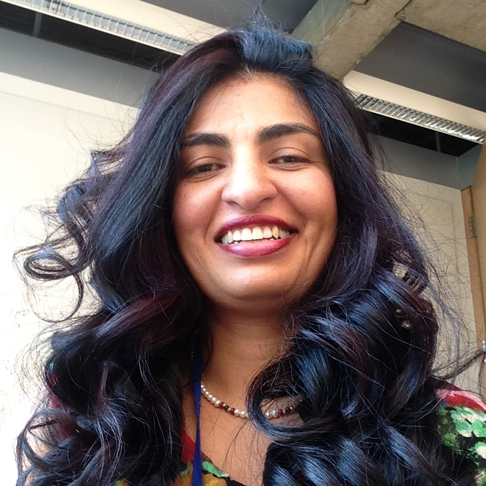

Being a quintessential Indian kid, I collected degrees in math and computer
science. A desire for a pure math PhD was serendipitously transformed into
a PhD in computer vision. The search for new scientific pastures led me to
the INRIA, Sophia-Antipolis, in the French Alps for a postdoc in face
detection. It was an introduction to a refreshing style of research, as well
as to wine and chocolate. Since the move to the US was unplanned,
instead of the easy option of a job in face detection and post 9/11 security
fascination, I chose a second postdoc in medical imaging. What was supposed to be a
year long experiment has become a job I am deeply passionate about.
A tenured professorship and multiple NIH grants later, it is the notion that
the research I do has the potential to change the life of a patient for
the better, the meaningfulness of it, that keeps me going despite the
stressors of academia. I am foremost a researcher, with my area of expertise
being diffusion imaging and connectomics, with a desire to elucidate the mechanisms of disease.
But I find myself continuously juggling many hats of lab director, collaborator,
manager, glorified grant writer, and a course director.
When I need a break, I travel, go
salsa dancing, find new cocktail bars where I can read my book, or
just cook.
Ragini Verma
Principal Investigator

- B.A. (Mathematics) Lady Shri Ram College For Women, University Of Delhi, India
- M.Sc. (Mathematics) Indian Institute Of Technology, Delhi, India
- M.Tech. (Computer Applications) Indian Institute Of Technology, Delhi, India , 1996
- Ph.D. (Mathematics And Computer Applications) Indian Institute Of Technology, Delhi, India